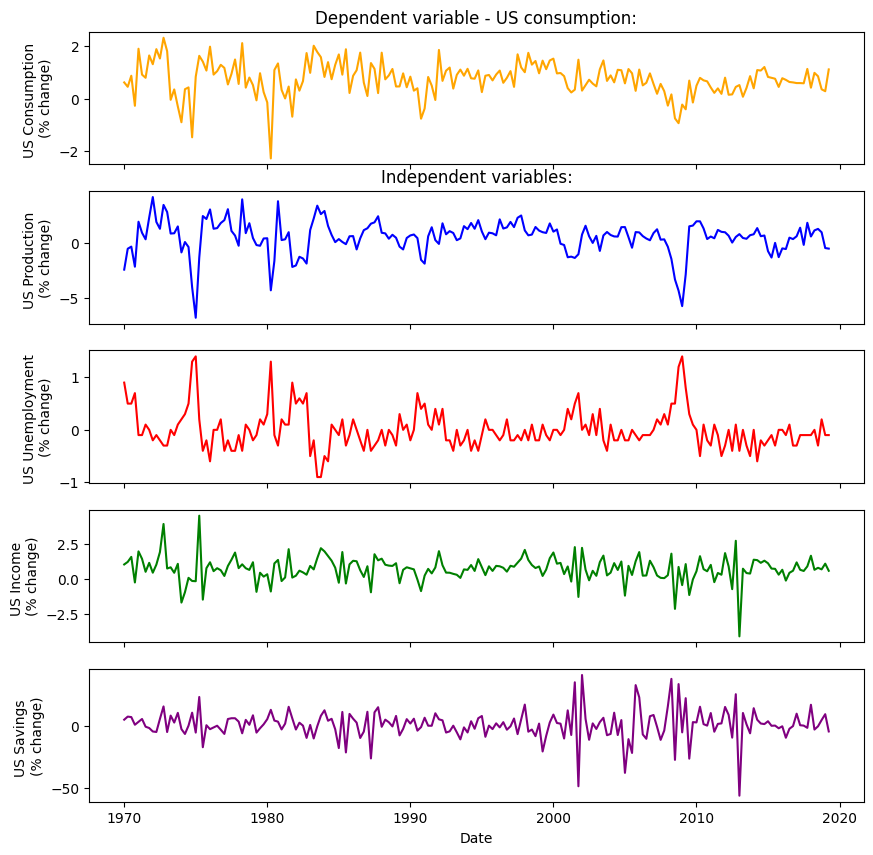
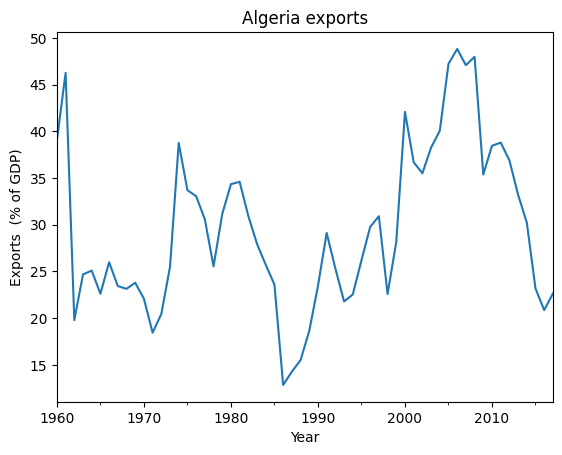
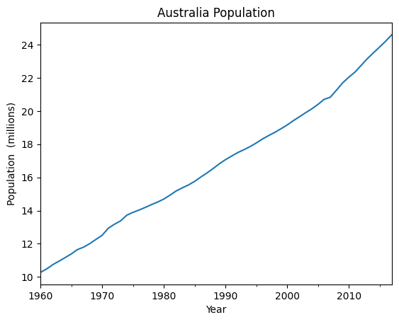
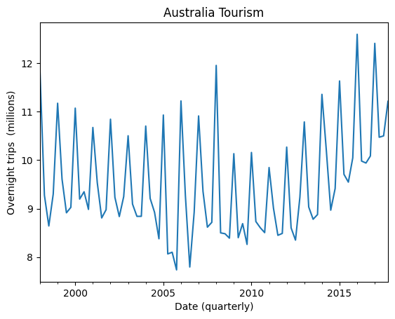
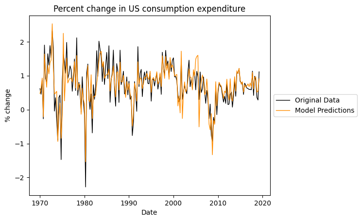
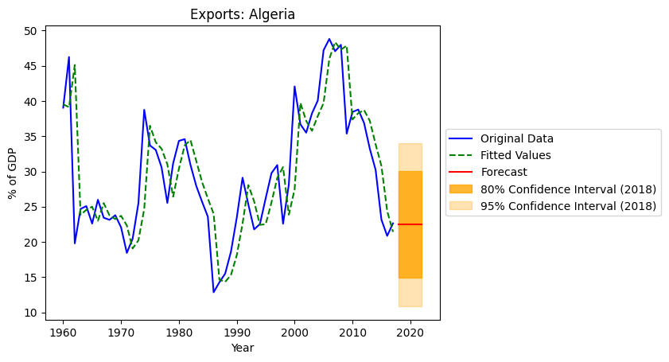
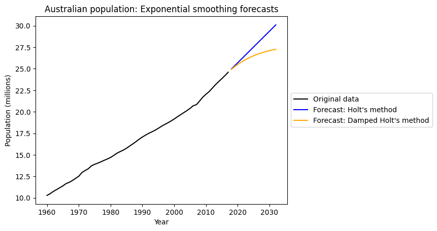
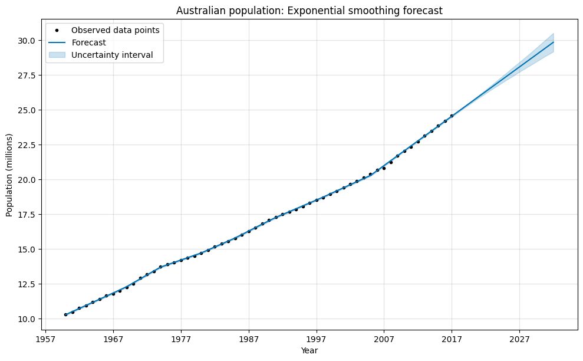
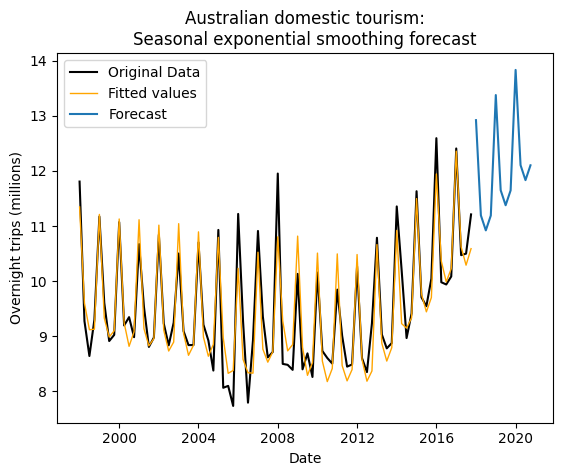

# Import general-use packages
import pandas as pd
import matplotlib.pyplot as pltProblem Set 04

Instructions: 1. Name: Kiera Murray 1. ChatGPT queries
Overview of this PS: You will be recreating graphs and explicitly computing values from “FPP 7 and 8 - The forecaster’s toolbox” in python.
Load and explore data
US Consumption
Load and wrangle the us_consumption data set, explore the raw values, and plot the time series in an informative fashion.
# Load and view raw data
us_consumption = pd.read_csv('us_consumption.csv', parse_dates = ['Quarter'], index_col = 'Quarter')
us_consumption| Consumption | Income | Production | Savings | Unemployment | |
|---|---|---|---|---|---|
| Quarter | |||||
| 1970-01-01 | 0.618566 | 1.044801 | -2.452486 | 5.299014 | 0.9 |
| 1970-04-01 | 0.451984 | 1.225647 | -0.551459 | 7.789894 | 0.5 |
| 1970-07-01 | 0.872872 | 1.585154 | -0.358652 | 7.403984 | 0.5 |
| 1970-10-01 | -0.271848 | -0.239545 | -2.185691 | 1.169898 | 0.7 |
| 1971-01-01 | 1.901345 | 1.975925 | 1.909764 | 3.535667 | -0.1 |
| ... | ... | ... | ... | ... | ... |
| 2018-04-01 | 0.983112 | 0.661825 | 1.117424 | -2.723974 | 0.0 |
| 2018-07-01 | 0.853181 | 0.806271 | 1.256722 | -0.085686 | -0.3 |
| 2018-10-01 | 0.356512 | 0.695142 | 0.948148 | 5.031337 | 0.2 |
| 2019-01-01 | 0.282885 | 1.100753 | -0.488206 | 9.760287 | -0.1 |
| 2019-04-01 | 1.113517 | 0.593399 | -0.539949 | -4.264616 | -0.1 |
198 rows × 5 columns
# Informative timeseries plot
fig, (ax0, ax1, ax2, ax3, ax4) = plt.subplots(5, 1, figsize=(10, 10), sharex=True, sharey=False)
ax0.plot(us_consumption['Consumption'], color='orange')
ax0.set_ylabel('US Consumption \n(% change)')
ax0.set_title('Dependent variable - US consumption:') # title for Consumption
ax1.plot(us_consumption['Production'], color='blue')
ax1.set_ylabel('US Production \n(% change)')
ax1.set_title('Independent variables:') # title for other variables
ax2.plot(us_consumption['Unemployment'], color='red')
ax2.set_ylabel('US Unemployment \n(% change)')
ax3.plot(us_consumption['Income'], color='green')
ax3.set_ylabel('US Income \n(% change)')
ax4.plot(us_consumption['Savings'], color='purple')
ax4.set_ylabel('US Savings \n(% change)')
ax4.set_xlabel('Date') # x-label for all
plt.show()
Algeria Exports
Load and wrangle the Algeria economy data set, explore the raw values, and plot the time series in an informative fashion.
# Load and view raw data
algeria_exports = pd.read_csv('algeria_economy.csv', parse_dates = ['Year'], index_col = 'Year')
algeria_exports.head(12)| Country | Code | GDP | Growth | CPI | Imports | Exports | Population | |
|---|---|---|---|---|---|---|---|---|
| Year | ||||||||
| 1960-01-01 | Algeria | DZA | 2.723649e+09 | NaN | NaN | 67.143632 | 39.043173 | 11124888 |
| 1961-01-01 | Algeria | DZA | 2.434777e+09 | -13.605441 | NaN | 67.503771 | 46.244557 | 11404859 |
| 1962-01-01 | Algeria | DZA | 2.001469e+09 | -19.685042 | NaN | 20.818647 | 19.793873 | 11690153 |
| 1963-01-01 | Algeria | DZA | 2.703015e+09 | 34.313729 | NaN | 36.825515 | 24.684682 | 11985136 |
| 1964-01-01 | Algeria | DZA | 2.909352e+09 | 5.839413 | NaN | 29.439763 | 25.084059 | 12295970 |
| 1965-01-01 | Algeria | DZA | 3.136259e+09 | 6.206898 | NaN | 25.833078 | 22.603944 | 12626952 |
| 1966-01-01 | Algeria | DZA | 3.039835e+09 | -4.804971 | NaN | 24.653572 | 25.986198 | 12980267 |
| 1967-01-01 | Algeria | DZA | 3.370843e+09 | 9.452963 | NaN | 21.631769 | 23.434417 | 13354197 |
| 1968-01-01 | Algeria | DZA | 3.852116e+09 | 10.796239 | NaN | 24.187254 | 23.135635 | 13744387 |
| 1969-01-01 | Algeria | DZA | 4.257219e+09 | 8.433280 | 2.569025 | 28.070758 | 23.788777 | 14144438 |
| 1970-01-01 | Algeria | DZA | 4.863487e+09 | 8.862657 | 2.738580 | 29.152668 | 22.072733 | 14550034 |
| 1971-01-01 | Algeria | DZA | 5.077222e+09 | -11.331719 | 2.810513 | 27.663778 | 18.442519 | 14960109 |
# Informative timeseries plot
algeria_exports['Exports'].plot()
plt.title('Algeria exports')
plt.ylabel('Exports (% of GDP)')
plt.xlabel('Year')
plt.show()
Australia Population
Load and wrangle the Australia economy data set, explore the raw values, and plot the time series in an informative fashion.
# Load and view raw data
australia_pop = pd.read_csv('aus_economy.csv', parse_dates = ['Year'], index_col = 'Year')
australia_pop.tail(10)| Country | Code | GDP | Growth | CPI | Imports | Exports | Population | Pop | |
|---|---|---|---|---|---|---|---|---|---|
| Year | |||||||||
| 2008-01-01 | Australia | AUS | 1.052585e+12 | 3.657767 | 95.473465 | 22.739099 | 20.188699 | 21249200 | 21.249200 |
| 2009-01-01 | Australia | AUS | 9.264482e+11 | 1.922727 | 97.164412 | 22.826476 | 23.038507 | 21691700 | 21.691700 |
| 2010-01-01 | Australia | AUS | 1.144261e+12 | 2.052942 | 100.000000 | 20.873865 | 19.842519 | 22031750 | 22.031750 |
| 2011-01-01 | Australia | AUS | 1.394281e+12 | 2.451105 | 103.303850 | 20.505099 | 21.472841 | 22340024 | 22.340024 |
| 2012-01-01 | Australia | AUS | 1.543411e+12 | 3.891940 | 105.124870 | 21.768105 | 21.518974 | 22742475 | 22.742475 |
| 2013-01-01 | Australia | AUS | 1.573697e+12 | 2.639482 | 107.700312 | 21.285862 | 19.987717 | 23145901 | 23.145901 |
| 2014-01-01 | Australia | AUS | 1.464955e+12 | 2.558338 | 110.379813 | 21.504083 | 21.075765 | 23504138 | 23.504138 |
| 2015-01-01 | Australia | AUS | 1.349034e+12 | 2.351136 | 112.044745 | 21.534423 | 20.012964 | 23850784 | 23.850784 |
| 2016-01-01 | Australia | AUS | 1.208039e+12 | 2.827311 | 113.475546 | 21.518447 | 19.253027 | 24210809 | 24.210809 |
| 2017-01-01 | Australia | AUS | 1.323421e+12 | 1.957575 | 115.686785 | 20.622616 | 21.270354 | 24598933 | 24.598933 |
# Informative timeseries plot
australia_pop['Pop'].plot() # population in millions
plt.title('Australia Population')
plt.ylabel('Population (millions)')
plt.xlabel('Year')
plt.show()
Australia Tourism
Load and wrangle the Australia Holidays data set, explore the raw values, and plot the time series in an informative fashion.
# Load, wrangle, and view data
aus_tourism = pd.read_csv('aus_holidays.csv', parse_dates = ['Quarter'], index_col = 'Quarter')
aus_tourism['Trips_millions'] = aus_tourism['Trips']/10**6
aus_tourism| Trips | Trips_millions | |
|---|---|---|
| Quarter | ||
| 1998-01-01 | 1.180604e+07 | 11.806038 |
| 1998-04-01 | 9.275662e+06 | 9.275662 |
| 1998-07-01 | 8.642489e+06 | 8.642489 |
| 1998-10-01 | 9.299524e+06 | 9.299524 |
| 1999-01-01 | 1.117203e+07 | 11.172027 |
| ... | ... | ... |
| 2016-10-01 | 1.008496e+07 | 10.084965 |
| 2017-01-01 | 1.240642e+07 | 12.406419 |
| 2017-04-01 | 1.047120e+07 | 10.471197 |
| 2017-07-01 | 1.049917e+07 | 10.499165 |
| 2017-10-01 | 1.121082e+07 | 11.210818 |
80 rows × 2 columns
# Informative timeseries plot
aus_tourism['Trips_millions'].plot()
plt.title('Australia Tourism')
plt.ylabel('Overnight trips (millions)')
plt.xlabel('Date (quarterly)')
plt.show()
Time Series Regression Model
- FPP 7.2 - Simple exponential smoothing: Recreate Fig 7.6
# Import class for linear regression
from sklearn.linear_model import LinearRegression
# Initialize model components
x = us_consumption[['Income', 'Production', 'Unemployment', 'Savings']].values
y = us_consumption['Consumption'].values
# Create a linear regression model
model = LinearRegression()
# Fit the model to the entire dataset
model.fit(x, y)
# Make predictions on the same dataset
y_pred = model.predict(x)
# Make plot
plt.plot(us_consumption.index, us_consumption['Consumption'], label='Original Data', color='black', linewidth=1)
plt.plot(us_consumption.index, y_pred, label='Model Predictions', color='darkorange', linewidth=1)
plt.title('Percent change in US consumption expenditure')
plt.ylabel('% change')
plt.xlabel('Date')
plt.legend(loc='center left', bbox_to_anchor=(1, 0.5))
plt.show()
Simple Exponential Smoothing
- FPP 8.1 - Simple exponential smoothing: Recreate Fig 8.2
- You only need to plot the forecasts into the future. The fitted values for observed time points is optional.
- Do the plot without forecasting/error bands as an MVP. Optional: include the forecasting/error bands.
# Import class for exponential smoothing
from statsmodels.tsa.holtwinters import ExponentialSmoothing
# Train the simple exponential smoothing model
model = ExponentialSmoothing(algeria_exports['Exports'])
fit_model = model.fit()
# Forecast into the future
forecast_periods = 5
forecast = fit_model.forecast(steps=forecast_periods)
# Calculate confidence intervals manually
forecast_index = pd.date_range(start=algeria_exports.index[-1] + pd.Timedelta(days=1), periods=forecast_periods, freq='Y')
z_score_80 = 1.28 # for 80% confidence interval
forecast_ci_lower_80 = forecast - z_score_80 * fit_model.resid.std()
forecast_ci_upper_80 = forecast + z_score_80 * fit_model.resid.std()
z_score_95 = 1.96 # for 95% confidence interval
forecast_ci_lower_95 = forecast - z_score_95 * fit_model.resid.std()
forecast_ci_upper_95 = forecast + z_score_95 * fit_model.resid.std()
# Plot the original data
plt.plot(algeria_exports.index, algeria_exports['Exports'], label='Original Data', color='blue')
# Plot the fitted values
fitted_values = fit_model.fittedvalues
plt.plot(algeria_exports.index, fitted_values, label='Fitted Values', color='green', linestyle='dashed')
# Plot the forecast
plt.plot(forecast_index, forecast, label='Forecast', color='red')
# Plot confidence intervals
plt.fill_between(forecast_index, forecast_ci_lower_80, forecast_ci_upper_80, color='orange', alpha=0.8, label='80% Confidence Interval (2018)')
plt.fill_between(forecast_index, forecast_ci_lower_95, forecast_ci_upper_95, color='orange', alpha=0.3, label='95% Confidence Interval (2018)')
# Add labels and a legend
plt.title('Exports: Algeria')
plt.xlabel('Year')
plt.ylabel('% of GDP')
plt.legend(loc='center left', bbox_to_anchor=(1, 0.5))
# Show the plot
plt.show()/opt/homebrew/lib/python3.9/site-packages/statsmodels/tsa/base/tsa_model.py:473: ValueWarning: No frequency information was provided, so inferred frequency AS-JAN will be used.
self._init_dates(dates, freq)
NOTE: I couldn’t figure out how to create confidence intervals that widen with time (as shown in FPP Fig. 8.2). As a “done is better than perfect” solution, I display the confidence intervals for 2018 to give the viewer a sense of forecast accuracy, but the intervals are not shown to widen over time.
Exponential smoothing with trend
- FPP 8.2 - Exponential smoothing with trend: Recreate Fig 8.4
- You only need to plot the forecasts into the future. The fitted values for observed time points is optional.
- Do the plot without forecasting/error bands as an MVP. Optional: include the forecasting/error bands.
- Optional: include a dampening effect (parameter \(\phi\) from Lec 12.1)
# Import class for Holt's method
from statsmodels.tsa.holtwinters import Holt
# Create and fit the default Holt model
model_holt = Holt(australia_pop['Pop'])
fit_model_holt = model_holt.fit()
# Create and fit the Holt model with damping
phi = 0.9
model_damp = Holt(australia_pop['Pop'], damped_trend=True)
fit_model_damp = model_damp.fit(damping_trend=phi)
# Forecast into the future
forecast_periods = 15
forecast_holt = fit_model_holt.forecast(steps=forecast_periods)
forecast_damp = fit_model_damp.forecast(steps=forecast_periods)
# Plot the original data
plt.plot(australia_pop.index, australia_pop['Pop'], label='Original data', color='black')
# Plot the forecasts
forecast_index = pd.date_range(start=australia_pop.index[-1] + pd.Timedelta(days=1), periods=forecast_periods, freq='Y')
plt.plot(forecast_index, forecast_holt, label='Forecast: Holt\'s method', color='blue')
plt.plot(forecast_index, forecast_damp, label='Forecast: Damped Holt\'s method', color='orange')
# Add labels and a legend
plt.title('Australian population: Exponential smoothing forecasts')
plt.xlabel('Year')
plt.ylabel('Population (millions)')
plt.legend(loc='center left', bbox_to_anchor=(1, 0.5))
# Show the plot
plt.show()/opt/homebrew/lib/python3.9/site-packages/statsmodels/tsa/base/tsa_model.py:473: ValueWarning: No frequency information was provided, so inferred frequency AS-JAN will be used.
self._init_dates(dates, freq)
/opt/homebrew/lib/python3.9/site-packages/statsmodels/tsa/base/tsa_model.py:473: ValueWarning: No frequency information was provided, so inferred frequency AS-JAN will be used.
self._init_dates(dates, freq)
An alternate plot with error bands for the non-damped trend
Made with a different (less “standard”) package that automatically includes error bands, but does not have an easy way to include a damped trend.
# load Facebook's Prophet package for forecasting
from prophet import Prophet
# Prepare data for Prophet
prophet_data = australia_pop.copy()
prophet_data['ds'] = prophet_data.index
prophet_data['y'] = prophet_data['Pop']
prophet_data = prophet_data.loc[:, ['ds', 'y']]
prophet_data.columns = ['ds', 'y']
# Create and fit the Prophet model with damping trend
model = Prophet(yearly_seasonality=False)
model.fit(prophet_data)
# Make future dataframe for forecasting
future = model.make_future_dataframe(periods=15, freq='Y')
# Forecast with uncertainty intervals
forecast = model.predict(future)
fig = model.plot(forecast, figsize=(10, 6))
# Add labels and a legend
plt.title('Australian population: Exponential smoothing forecast')
plt.xlabel('Year')
plt.ylabel('Population (millions)')
plt.legend()
# Show the plot
plt.show()01:38:23 - cmdstanpy - INFO - Chain [1] start processing
01:38:23 - cmdstanpy - INFO - Chain [1] done processing
Exponential smoothing with seasonality
- FPP 8.3 - Exponential smoothing with seasonality: Recreate Fig 8.7
- You only need to plot the forecasts into the future. The fitted values for observed time points is optional.
- Include only the additive model
- Do the plot without forecasting/error bands as an MVP. Optional: include the forecasting/error bands.
# Import class for exponential smoothing
from statsmodels.tsa.holtwinters import ExponentialSmoothing
# Set the number of periods in a complete seasonal cycle
seasonal_periods = 4 # for quarterly data
# Create and fit the Holt-Winters model with additive seasonality
model = ExponentialSmoothing(aus_tourism['Trips_millions'], trend='add', seasonal='add', seasonal_periods=seasonal_periods, initialization_method="estimated")
fit_model = model.fit()
# Forecast into the future
forecast_periods = 4*3 # forecast 3 years into the future
forecast = fit_model.forecast(steps=forecast_periods)
# Plot the original data and forecast
plt.plot(aus_tourism.index, aus_tourism['Trips_millions'], label='Original Data', color='black')
plt.plot(fit_model.fittedvalues, label='Fitted values', color='orange', linewidth=1)
plt.plot(pd.date_range(start=aus_tourism.index[-1] + pd.DateOffset(months=1), periods=forecast_periods, freq='Q'), forecast, label='Forecast')
# Add labels and a legend
plt.title('Australian domestic tourism:\nSeasonal exponential smoothing forecast')
plt.xlabel('Date')
plt.ylabel('Overnight trips (millions)')
plt.legend()
# Show the plot
plt.show()/opt/homebrew/lib/python3.9/site-packages/statsmodels/tsa/base/tsa_model.py:473: ValueWarning: No frequency information was provided, so inferred frequency QS-OCT will be used.
self._init_dates(dates, freq)